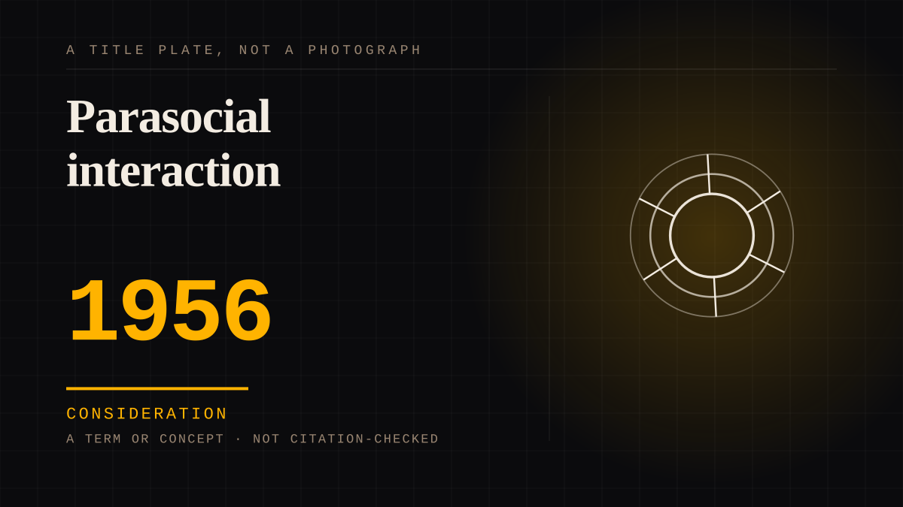

A term or concept · 1956 · Naming
Parasocial interaction
The name itself. Coined to describe the way viewers responded to a television character they followed consistently - a bond with somebody who did not know they existed. Parasocial: one-sided, parallel to the para- in paranormal.

The coinage is defensive and that is the story. It was invented in the McCarthy era to describe a television habit that was considered slightly shameful - viewers writing in about soap characters as though they could be defamed. The word bakes in an apology for the feeling. The feeling did not need one.
Consideration. The part where somebody stops and thinks. The research, the diagnosis, the ethics, the lawsuits, the regulators. Roughly fifty years of arguing with itself about whether this is a relationship.
Same story, 6 other entries
The protagonist is a parasocial object1939 → Parasocial interaction disorder1985 → Parasocial persuasion2015 → The K-pop intimacy economy2016 → Consent in one-sided attachment2020 → A glimpse mistaken for access2026
Where it sits
1950 1950-1999 · 1956 1999
Provenance · 2 source record(s)
- unverifiedNo specific claim is recorded against this source. The record is a pointer to the work in general; the entry's own prose is the argument and is not sourced line by line.Horton, D., & Wohl, R. R. (1956). Mass communication and para-social interaction: Observations on intimacy at a distance. Psychiatry, 19(3), 215-229. ↗
- retrievableTHE FOUNDING CITATION for the term this entire site runs on, coined in 1956 for psychological attachment to television personalities, and quoted for the 'exchange' at p.218Horton, D., & Wohl, R. R. (1956). Mass Communication and Social Interaction: Observations on Intimacy at a Distance. Psychiatry, 19(3), 215-229. ↗
Not yet stood behind. The entry is real. A person has not read the citation and confirmed it, so treat the date as approximate until they do.
Connected · 3 out, 16 in
Reported as a story
It sits in
The full timeline → · The database → · See it in the atlas →